Time Series Forecasting for Algorithmic Trading
Developed a multi-step LSTM model to forecast MACD crossover signals up to 6 days ahead, successfully predicting early signals in 3 out of 4 real cases — demonstrating how Deep Learning can enhance technical indicators for trading strategies.
Project Objective
Technical indicators like MACD help visualize momentum and trend reversals in trading. But what if we could predict these signals slightly in advance? This project explores whether a Recurrent Neural Network (LSTM) can forecast upcoming MACD crossovers using past price sequences, potentially enabling traders to act earlier.
1. Understanding MACD and Its Role in Trading
The Moving Average Convergence Divergence (MACD) is a momentum indicator built from two exponential moving averages (EMA): a slow and a fast one. The crossover of these EMAs signals potential trend reversals. While widely used, MACD is inherently reactive — it only reflects past price behavior. The goal here is to forecast the crossover itself before it happens, using historical price patterns.
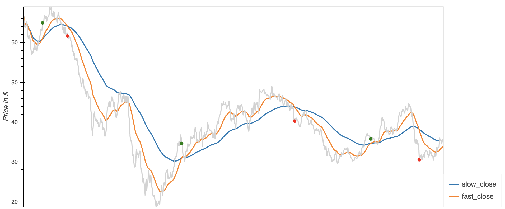2. Strategy: Forecasting MACD Crossovers
Using a Recurrent Neural Network (RNN) architecture — specifically a stacked LSTM — I trained the model on sequences of price data from Devon Energy (DVN), a stock with historically high volatility. The model takes a fixed-length sequence of daily prices and learns to predict the next 6-day price window. By comparing the forecasted EMA crossover to the actual one, we assess the model’s ability to anticipate MACD signals.
The model was tested on real crossover cases after its training period to check if the predicted prices would anticipate the signal before the MACD did.
3. Data Setup
- Stock: Devon Energy Company (DVN)
- Training Period: 02/17/2015 – 04/27/2018
- Prediction Period: 04/27/2018 – Present
- MACD Parameters: Fast EMA – 10 days, Slow EMA – 40 days
- Forecast Horizon: 6-day future window
Selected Test Crossover Points
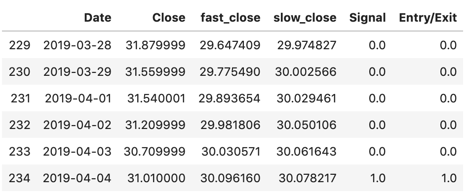 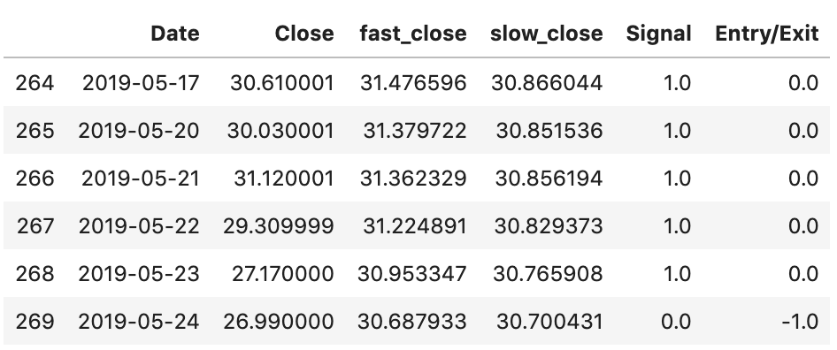 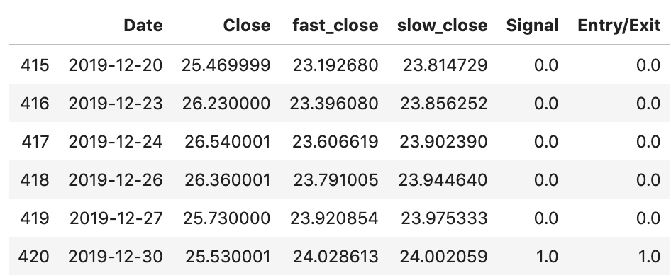 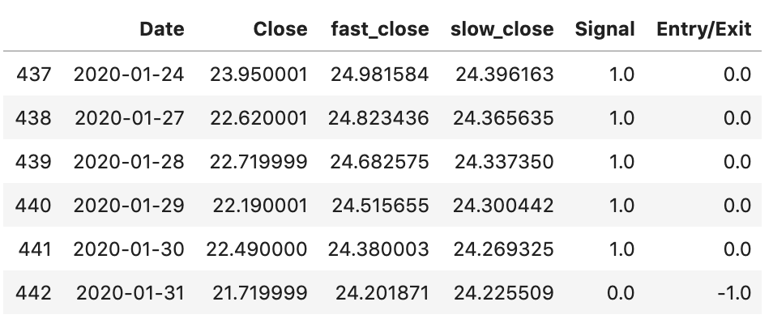4. Model Architecture
The model is a stacked LSTM architecture with three layers:
- Two hidden layers with 100 neurons each (ReLU activation)
- Output layer with 6 neurons (for 6-day price forecast)
Data was split into overlapping sub-sequences using a custom function. Each sequence was fed as input (X) and target (y) pairs.
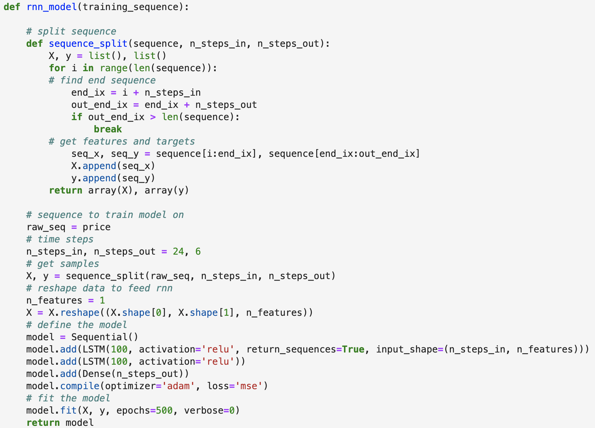5. Forecasting Results
Forecasted prices were compared with actual prices around 4 different crossover events. The model was able to anticipate a crossover in 3 of those 4 cases, showing promising capabilities in short-term forecasting for trading.
Forecasted Price Outputs
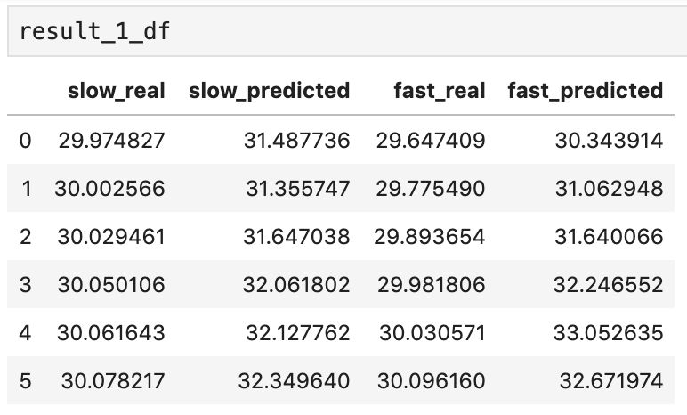 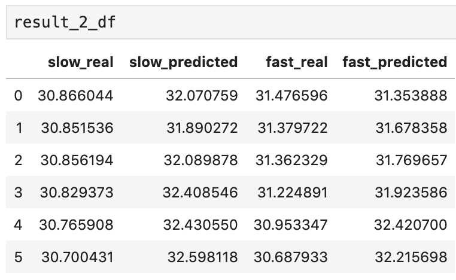 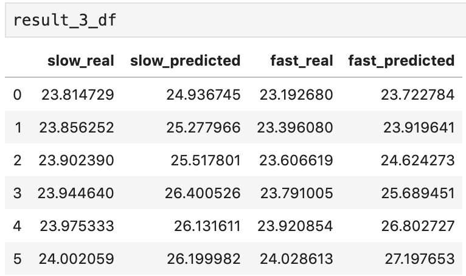 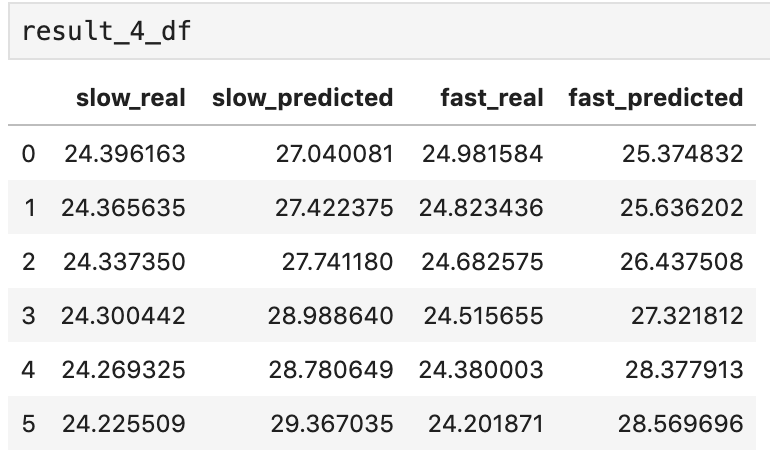Forecast vs MACD Crossovers
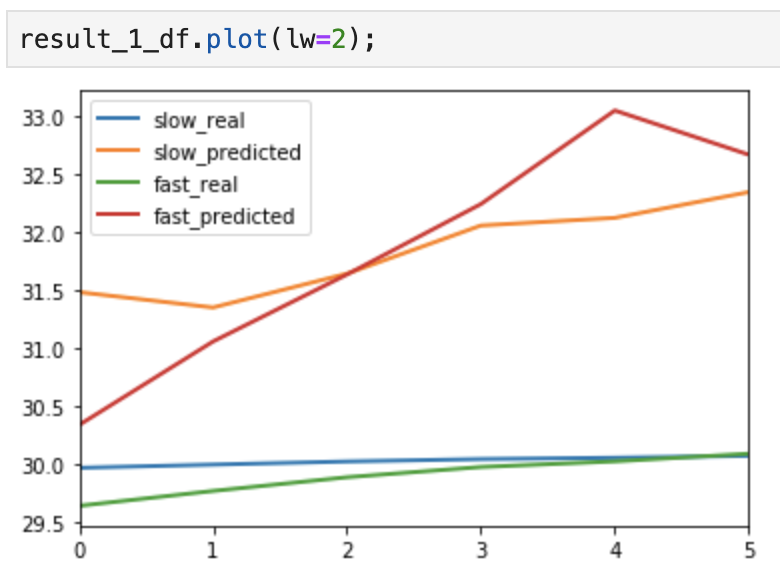 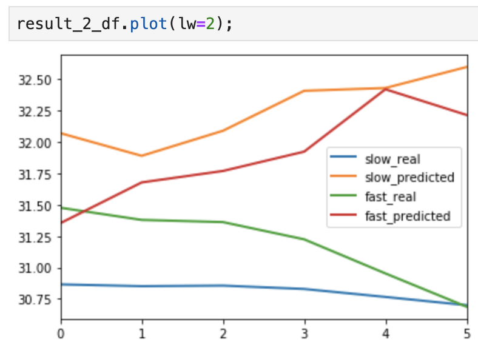 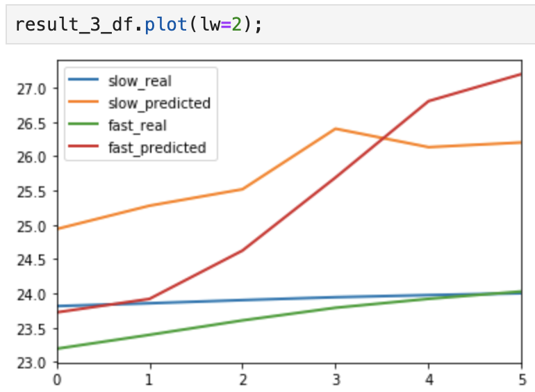 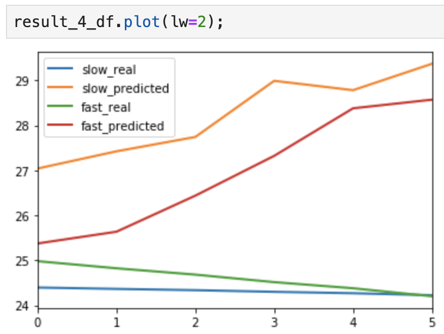6. Conclusion
This project provides early evidence that Recurrent Neural Networks — particularly LSTM architectures — can complement traditional technical indicators like MACD by forecasting trend reversals a few days in advance. While not a complete trading solution on their own, such models can serve as valuable tools in a larger algorithmic trading system, improving reaction time and decision quality in volatile markets.